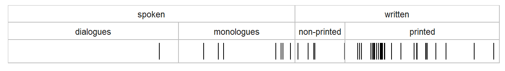

# install development version directly from Github#pak::pak("lsoenning/tlda")#pak::pak("lsoenning/wls")library(tlda) # for access to datasetslibrary(wls) # for custom ggplot themelibrary(tidyverse) # for data wranglinglibrary(ggh4x) # for drawing nested facets in ggplotsource("C:/Users/ba4rh5/Work Folders/My Files/R projects/my_utils_website.R")
Dispersion plots were introduced into corpus linguistics in the mid-1990s by Mike Scott and his popular software WordSmith Tools. They are useful for examining the distribution of an item in a text or corpus. The typical layout of a dispersion plot shows a layered arrangement, with each row showing a text file in the corpus. Thin vertical bars then show where in the document a word occurs. If you want to draw such a plot in R, the {quanteda} package (Benoit et al. 2018) is worth checking out (see Section Lexical dispersion plot on the package website).
If we are working with a corpus that consists of different text categories (such as registers, genres, etc.), it makes sense to enrich dispersion plots with information about the structure of the corpus. In this blog post, we look at one way of doing so, which I will refer to as a structured dispersion plot. It strings together all text files in the corpus and locates the occurrences of an item throughout the entire corpus. The structure of the text files is reflected through one or several annotation layers above the dispersion plot; this way, we can see in which sub-corpus a particular instance occurred.
Information about corpus position and source text of item
To draw a dispersion plot, we need information about the location (or position) of each occurrence of the item in the corpus. For illustration, we will consider the distribution of two word forms, methods and thirteen, in ICE-GB (Nelson, Wallis, and Aarts 2002). Biber et al. (2016) expect methods to be writing-skewed and thirteen to be speech-skewed. Both word forms are part of a list of items that was compiled by Biber et al. (2016) to study the behavior of dispersion measures in different distributional settings. The 150 items are intended to cover a broad range of frequency and dispersion levels (see Sönning 2025a and help("biber150_ice_gb")).
We start by loading a data frame that lists every word and non-word token in the corpus and contains 1,072,393 rows in total. The table has three columns:
text_file the text files in which the item occurs
item the item, i.e. word form
corpus_position the corpus position of the item
ice_gb <-readRDS("ice_gb.rds")str(ice_gb)
'data.frame': 1072393 obs. of 3 variables:
$ text_file : chr "s1a-001" "s1a-001" "s1a-001" "s1a-001" ...
$ item : chr NA NA NA NA ...
$ corpus_position: int 1 2 3 4 5 6 7 8 9 10 ...
The column item only identifies the word forms that are part of Biber et al.’s (2016) list; other tokens have been replaced by NA. The item methods occurs 63 times in ICE-GB, thirteen 27 times:
sum(ice_gb$item =="methods", na.rm =TRUE)
[1] 63
sum(ice_gb$item =="thirteen", na.rm =TRUE)
[1] 27
Information about corpus structure
The ICE family corpora rely on a standardized sampling frame (see here). Relevant metadata about the 500 text files in ICE-GB is provided in the data object metadata_ice_gb in the {tlda} package (Sönning 2025b). See help("metadata_ice_gb") for more information about this data table.
Let us briefly explore the structure of ICE-GB. Starting at the broadest level of classification, it covers two modes of production. The number of spoken and written text files differs:
ftable( metadata_ice_gb$mode, row.vars =1)
spoken 300
written 200
At the next level, the corpus is divided into four text categories:
When analyzing the dispersion of an item in ICE-GB, this structure needs to be taken into account.
Data preparation
Importantly, the classification variables denoting text varieties (text_category, macro_genre, and genre) are already ordered based on the sampling frame that informs the design of the ICE family of corpora. In metadata_ice_gb, they are represented as ordered factors (see above). This is important for visualization later on, because we want to order the text files (and higher-level text categories) in a sensible way.
We now need to combine the information contained in the two tables. The linking column is text_file, which allows us to join ice_gb with metadata_ice_gb:
ice_gb <-full_join( ice_gb, metadata_ice_gb)
This yields a data frame with more information about each token in the corpus:
Three more preparatory steps are necessary. First, we replace the NA code in the column item with a blank space (” “), as this will make it easier to plot the data:
Now we are ready for plotting. The following annotated code draws a structured dispersion plot. It uses the function facet_nested() from the {ggh4x} package (van den Brand 2024) to draw nested facets. The function theme_dispersion_plot() from the {wls} package (Sönning 2025c) adjusts the ggplot2 theme for a nicer appearance. We start by drawing a structured dispersion plot for methods, with two structural annotation layers: text category (4 categories) nested within mode (2 categories):
ice_gb |>mutate(item_location =ifelse( # create new column indicating the item =="methods", # occurrence of the item (for color item, "other")) |># coding further below)ggplot(aes(x = position_fct)) +# corpus position as the x-variablegeom_segment(aes( # draw vertical bars at location ofx = position_fct, # occurrence (position_fct),xend = position_fct, # extending from 0 to 1 vertically y =0, yend =1, #color = item_location)) +# only draw bars where item occursfacet_nested( # nested facets with the {ggh4x} package: . ~ mode + text_category_nice, # text categ. facets nested within modescales ="free", # allow x-scale to vary across facetsspace ="free_x") +# facet width proportional to lengthscale_color_manual( # set color manually so bars appear values =c("black", "transparent")) +# only where item occursscale_x_discrete(expand =c(0,0)) +# avoid left/right padding in facets scale_y_continuous(expand =c(.1,.1)) +# add some top/bottom paddingtheme_bw() +# specify theme_bw() as basistheme_dispersion_plot() +# custom theme for dispersion plotxlab(NULL) +ylab(NULL) # no axis labels

Figure 1: Structured dispersion plot showing the distribution of methods in ICE-GB.
In line with Biber et al. (2016)’s expectation, methods is skewed toward written usage. The vertical bars gravitate toward the right, where written texts are located. Let us zoom in to the written part, to examine whether this item is associated with specific genres. Using the filter() function in the {dplyr} package, we can isolate the written part of the corpus. We also change the facetting scheme – annotation layers now show macro genre (8 categories) nested within text category (2 categories), nested within mode (here only 1 category):
Figure 2: Structured dispersion plot showing the distribution of methods in the written part of ICE-GB.
Perhaps unsurprisingly, occurrences of methods are most densely clustered in the macro genre academic writing.
Let’s also look at a structured dispersion plot for thirteen, which shows the reverse pattern – it is more common in speech. Note that the annotation layers above the plot now include mode (2 categories) and text category (4 categories).
Figure 3: Structured dispersion plot showing the distribution of thirteen in ICE-GB.
While I think structured dispersion plots can be useful in corpus analysis, I am not really happy with the way they are implemented here: Slow and lots of (unelegant) code. If you have a better idea of how to draw such plots in R, please let me know!
References
Benoit, Kenneth, Kohei Watanabe, Haiyan Wang, Paul Nulty, Adam Obeng, Stefan Müller, and Akitaka Matsuo. 2018. “Quanteda: An r Package for the Quantitative Analysis of Textual Data.”Journal of Open Source Software 3 (30): 774. https://doi.org/10.21105/joss.00774.
Biber, Douglas, Randi Reppen, Erin Schnur, and Romy Ghanem. 2016. “On the (Non)utility of Juilland’sDto Measure Lexical Dispersion in Large Corpora.”International Journal of Corpus Linguistics 21 (4): 439–64. https://doi.org/10.1075/ijcl.21.4.01bib.
Nelson, Gerald, Sean Wallis, and Bas Aarts. 2002. Exploring Natural Language: Working with the British Component of the International Corpus of English. John Benjamins. https://doi.org/10.1075/veaw.g29.
Sönning, Lukas. 2025a. “Biber et al.’s (2016) set of 150 BNC items for the analysis of dispersion measures: Dataset for ‘Evaluation of text-level measures of lexical dispersion’.” DataverseNO. https://doi.org/10.18710/ATCQZW.
![]()